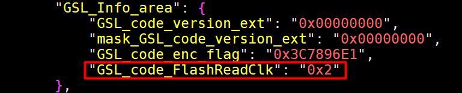
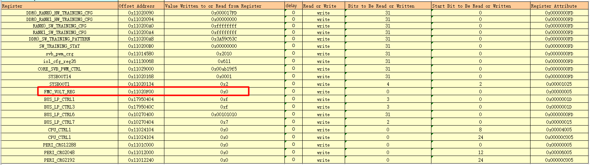
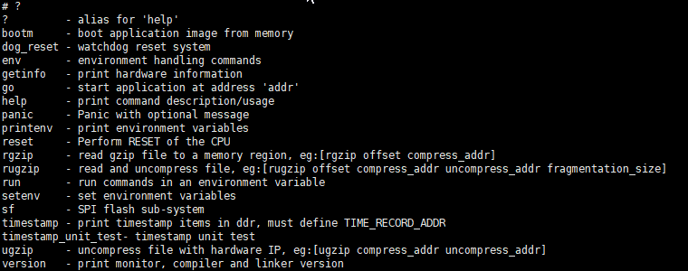

前言
前言
本文档主要介绍快速启动的优化点及优化建议和使用方法，以及如何构建及使用参考快速启动镜像。
说明：
本文中优化手段仅做快启优化参考，产品可根据具体要求进行选用，并做好严格验证，本文中优化带来的风险后果请自行承担。
本文描述均以Hi3516CV610产品为例，在实际操作中，如无特殊说明，只需替换产品名和工具链名称。
与本文档相对应的产品版本如下。
本文档（本指南）主要适用于以下工程师：
- 技术支持工程师
- 软件开发工程师
在本文中可能出现下列标志，它们所代表的含义如下。


概述
免责声明
本文中提供的快速启动方法手段仅供参考。在使用这些优化方法之前，请您务必仔细理解并分析其可能带来的风险。您可以选择不使用本文档中的快速启动优化手段，但如果您使用，您的使用行为将被视为已认可本声明，并知晓快速启动方法可能存在的风险。
系统启动的主要流程简介
系统启动的主要流程包含如下步骤：
- 硬件上电、芯片复位：纯硬件行为。
- BootRom阶段：芯片内sram运行，随芯片出厂预置，后期不可变更，GSL在本阶段加载。
- GSL阶段：SVB及DDR初始化；FLASH初始化；加载U-Boot和跳转到U-Boot。
- U-Boot阶段：板级初始化；加载Kernel和Rootfs；跳转到Kernel。
- Kernel阶段：驱动初始化；挂载Rootfs；准备Shell运行时环境。
- Shell/Rootfs阶段：执行rcS启动脚本，脚本中一般会拉起Application应用进程。
- Application应用业务启动阶段：初始化SDK运行时环境；加载业务相关的KO驱动；进入应用业务主线程。
快速启动优化总体思路
快速启动可以从硬件和软件两大方向分别进行优化。其中硬件优化主要包括：
- BootRom下Flash Boot模式提频
- Flash默认电压修改支持更高频率
- 选用读速高的介质，比如选择支持4线DTR频率高的Flash，提高镜像等加载速度
- Sensor选型选择支持初始化序列耗时短的Sensor
其中软件按启动阶段，又可以细分为GSL、U-Boot、Kernel、Application业务等，虽然不同产品快速启动方案不同，但细分至各阶段，往往存在一些公共优化原则。本文描述的快速启动方案总体遵循如下优化原则：
- 业务流程优化：流程精简，识别并剪裁非必须业务流程和特性；优化关键流程的性能；模块提前或者延后执行，比如快启及依赖相关的流程提前先执行，优先保证出图业务。
- 并行化：充分利用SOC上硬件资源，将能独立运行的子任务放到硬件资源上执行，使得时间维度上和其他任务并行执行，缩短整体耗时。
-
小型化：小型化业务及镜像，可以提高镜像加载速度及加快业务流程执行速度，包括GSL小型化、U-Boot小型化、OS镜像小型化、ROOTFS小型化、App业务小型化等。
硬件优化方向
本指南针对Hi3516CV610硬件层面可以优化的点，详细请见硬件优化章节。实际业务使用时根据场景需要选用或者参考修改。
软件优化方向
本指南针对Hi3516CV610软件层面可以优化的点，详细请见软件优化章节。实际业务使用时根据场景需要选用或者参考修改。
快速启动版本开发建议
由于发布版本默认支持快速启动，各个组件包相比原始状态裁剪了部分功能，不可避免地对开发调试效率造成了影响，如裁剪busybox部分调试命令、U-Boot部分调试命令等。因此在开发前期需要熟悉本文档，对于开发过程中特殊调试需求的，可以根据本身业务需求重新配置Kernel与U-Boot。
硬件优化
BootRom阶段Flash Boot模式频率修改
当前Hi3516CV610芯片，Flash BOOT模式下默认的频率是12MHz。可以根据产品Flash配置合适的频率，当前有12MHz，75MHz，99MHz几档可以供配置选择。修改方法如下：
根据Flash支持的频率范围，修改GSL_code_FlashReadClk配置项(配置文件路径：boards/dmeb/tools/pc/image_tool/oem/quick_build_config.json)，如图所示。

此配置项值可以为0x0，0x1，0x2，分别代表BOOT模式下读频率为12MHz、75MHz、99MHz。
根据实际产品Flash选型支持的最高的频率修改配置项，如最高频率小于90MHz，则只能配置12MHz或者75MHz。
Flash最高频率支持修改
Flash频率高低决定了Flash读速，影响了U-Boot镜像、内核镜像、rootfs镜像加载及文件系统读速，对快速启动有极其重要的影响。
当前芯片Flash默认电压是1.8V，此电压下最高只能支持到75MHz频率。如果选型的Flash能支持更高频率，需要修改BOOT表格FMC_VOLT_REG寄存器，使Flash电压支持到3.3V。
如下所示，修改BOOT表格中FMC_VOLT_REG项的Value值：可以填0x0或者0x1 （当前版本默认是0x1）
SFC器件工作电压和速率选择：
0x0: 最高支持99MHz（仅3.3V支持）
0x1: 最高支持75MHz (3.3V/1.8V均支持)

表格路径：boards/dmeb/tools/pc/boot_tools/
请根据产品实际Flash选型对应型号Flash手册查看Flash支持的最高频率，再确定是否要修改。
Flash选型
不同FLASH器件对启动速度有较大影响，可以根据产品使用场景选择合适的Flash。如表1所示，数据仅供参考。
表 1 Flash速率
对启动速度要求高，建议使用 SPI NOR 4线 DTR Flash。
Sensor选型
不同的Sensor初始化序列及图像收敛耗时差别较大，对快速启动影响较大。市面上Sensor初始化耗时从几个毫秒到几百毫秒的都有，可以根据产品定位选择合适的Sensor。
媒体初始化时，在ISP初始化阶段会先初始化Sensor，再初始化其他模块，媒体初始化完成后，再等待Sensor的起始帧中断，这个流程是串行的，所以Sensor初始化的快慢直接影响整个媒体初始化的速度。
市面上不同Sensor初始化序列及时序等差别较大，一般初始化通过I2C按时序要求写寄存器，读写寄存器数量从几个到几百个，甚至多达上千个都存在，这个不同Sensor各不相同。除此之外，Sensor可能有等时序Delay的要求，从0毫秒到上百毫秒的情况都存在，这些属性差异导致Sensor序列初始化耗时差异可能较大。
另外，Sensor的图像收敛耗时差异也较大，有些Sensor支持图形快速收敛，有些Sensor能够自动收敛，收敛耗时从业务应用角度看等待0帧到10多帧情况都存在。如果对快速出高质量帧这一指标有高要求，这一部分也是Sensor选型需要考虑的因素。
BootRom关闭通道扫描
芯片BootRom支持通道扫描功能，用于调试阶段串口裸烧等，此部分扫描通道耗时超过30ms，实际产品release版本可以关闭此功能。参考板上可以通过fastboot拨码关闭。
软件优化
GSL优化修改说明
-
Flash提前初始化为normal模式
默认情况下，GSL加载U-Boot时Flash工作在Boot模式，读速较慢，U-Boot镜像越大耗时越长。
可以通过将GSL阶段Flash初始化为normal模式，提高U-Boot的加载速度。
Flash normal模式读优化默认是关闭的，可以打开CONFIG_GSL_FMC_READ=1选项使能Flash normal模式读。此控制选项定义所在文件路径：boards/dmeb/components/gsl/cfg.mk
说明：
GSL中Flash当前只适配了SPI NOR Flash，另外需要根据具体Flash型号修改Flash支持表。GSL中Flash支持列表路径：drivers/fmc/spi/fmc100/fmc_spi_nor_ids.c，将对应的Flash配置替换到fmc_spi_nor_info_table中（修改MINI_TABLE宏分支中的table表结构体，当前默认只做参考，产品需要根据实际型号替换）。 -
GSL小型化
GSL是BootRom阶段加载的，运行在RAM中。RAM资源大小有限，并且BootRom是在Boot模式将GSL代码等读到RAM中，GSL小型化可以缩短加载GSL时间，对快启有收益。
实际产品开发中，这部分如果有开发修改，且对快启有极高的要求，这部分建议尽量简化，保持GSL小型化，这样能缩短BootRom加载GSL镜像时间。
U-Boot优化修改说明
U-Boot启动是当前系统启动必经流程，提高其启动速度，能提高整体启动速度。U-Boot启动流程主要包括：U-Boot自解压，板级初始化、和Kernel&文件系统等加载，分析Image并启动Linux流程。优化手段按启动流程划分，主要包含但不限于如下二点。
- 板级初始化优化：去掉板级初始化阶段U-Boot代码重定位,删除非必要的驱动初始化流程，减少必要的驱动初始化耗时，最终板级初始化耗时减少；
- 镜像加载优化：主要包括镜像小型化、使用芯片硬解压功能、提升FLASH控制器主频等手段，减少镜像加载耗时，rugzip命令优化。
U-Boot的主要优化点：
- 剪裁不需要的CMD命令
- 剪裁不需要的驱动（网络、USB、Flash驱动等）
- 关闭串口打印
- ENV分区减小，提高env分区加载速度（或者禁用ENV分区，固化bootargs和bootcmd）
- bootdelay等待延时关闭（当前默认是2秒，请自行修改bootargs中bootdelay值为0）
- 支持边读边解压，提高镜像和rootfs加载速度
- 板级初始化时U-Boot代码及数据段重定位优化
- SPI NOR Flash支持4线DTR模式
-
bootm起内核镜像和dtb镜像零拷贝
U-Boot快启优化配置剪裁项说明
-
U-Boot快启相关的优化在U-Boot的文件hi3516cv610_mini_defconfig中，U-Boot小型化剪裁相关的配置都在config中，当前默认支持以下命令：

注：只保留基本命令行，不支持自动补全及详细帮助等。
-
另外此config除了做了小型化剪裁外，还打开了以下配置：
CONFIG_TIME_ADDR_OFFSET=0xF800
CONFIG_CMD_TIMESTAMP=y
CONFIG_CMD_UGZIP=y
CONFIG_DTR_MODE_SUPPORT=y
其中CONFIG_CMD_TIMESTAMP和CONFIG_TIME_ADDR_OFFSET是耗时时间戳统计配置，方便统计从bootrom到U-Boot阶段详细耗时统计，详细见U-Boot启动性能调试小节说明。
CONFIG_CMD_UGZIP使能边读边解压命令，Flash读镜像和硬件解压镜像并行，提高加载速度，其中镜像采用gzip压缩。
CONFIG_DTR_MODE_SUPPORT开启DTR模式读写，提高Flash读速，具体使用时请根据实际Flash是否支持选择关闭或者打开。
-
mini uboot配置去掉了大部分的调试信息，并且默认关闭了升级功能，建议调试验证时使用hi3516cv610_mini_debug_defconfig配置，并通过tftp烧写mini uboot。
1. hi3516cv610_mini_defconfig配置仅做参考使用，实际产品化根据实际需求场景选用打开或者关闭相关选项。
2. mini boot优化及剪裁项在代码中使用MINI_BOOT宏控制(config中通过CONFIG_MINI_BOOT宏控制打开或者关闭，hi3516cv610_mini_defconfig中默认打开)，如有需要，可以详细查看U-Boot代码中MINI_BOOT宏分支相关地方。
U-Boot启动性能调试
-
时间调试
调试阶段可在U-Boot中恰当位置增加时间戳日志信息，如进入main_loop时，增加如下“timestamp_mark("main_loop_enter", __LINE__);”代码调用，即可增加一条时间戳日志。
同时在内核中同步了 timer计时，从而保证了在内核中使用printk打印时间信息时，是接续了U-Boot阶段的时间的，方便调测。
特别注意：U-Boot的时间戳是微秒为单位，内核printk打印的时间戳单位是秒
-
打印调试
上述时间戳信息会在内核初始化过程中打印出来，方便后续直接使用dmesg命令查看和分析，如下：
[ 2.075860] -0- boot timestamp bootrom_start @ 215 [ 2.075868] -1- boot timestamp bootrom_getchannel @ 1495 [ 2.075873] -2- boot timestamp bootrom_gsl_end @ 5745 [ 2.075878] -3- boot timestamp bootrom_end @ 5757 [ 2.075883] -4- boot timestamp gsl_start @ 5766 [ 2.075888] -5- boot timestamp uboot_start @ 13125 [ 2.075894] -6- boot timestamp board_init_r_start @ 13734 [ 2.075899] -7- boot timestamp main_loop_enter @ 16312 [ 2.075906] -8- boot timestamp main_loop_autoboot_cmd_start @ 16316 [ 2.075910] -9- boot timestamp rugzip_start @ 2016640 [ 2.075916] -10- boot timestamp rugzip_end @ 2044658 [ 2.075921] -11- boot timestamp rugzip_start @ 2044667 [ 2.075926] -12- boot timestamp rugzip_end @ 2067646 [ 2.075931] -13- boot timestamp bootm_start @ 2067652 [ 2.075936] -14- boot timestamp bootm_end @ 2068612
上述日志信息分析方法：
BootRom阶段耗时：5757-215=5542微秒，5.54毫秒。其它阶段可自行计算分析。
****注：上述时间戳打印并接续到内核中，需要在bootargs中设置timestamp参数，并且内核中CONFIG_CMD_TIMESTAMP需要打开，才能生效。如快启参考bootargs参数如下，打开timestamp参数：
bootargs=quiet timestamp=0x41FFF800,0x800 mem=30m earlycon=pl011,0x11040000 console=ttyAMA0,115200 clk_ignore_unused rw root=/dev/ram0 rootfstype=romfs initrd=0x41980000,0x480000 mtdparts=sfc:512K(boot),512K(env),5M(kernel),10M(rootfs.ramdisk)
其中timestamp第一个参数是时间戳打印的地址位置，第二参数代表总大小。可以根据实际情况自行定义设置，注意打印的地址位置不要和其他位置冲突，避免被覆盖。
Linux内核优化修改说明
Kernel的启动时间主要受内核大小、内核解压速度、默认加载模块等方面影响。按照优化项划分，主要包含但不限于以下几点：
- 镜像小型化：删减非必须模块，减少镜像大小，详细参考《Hi35xxVxxx 系统小型化说明》；
- Rootfs使用Ramdisk方式挂载；
- Ramdisk零拷贝（不生成和读写/initrd.image文件），配置VENDOR_RAMDISK_ZERO_COPY打开此优化；
- RCU快速触发（加速锁检测），配置VENDOR_TIMER_TRIGGER_RCU打开此优化；
- 节点并行（并行生成设备节点），配置STARTUP_PARALLEL_CREATION_NODE_OPT打开此优化；
- Sysfs小型化（裁剪不需要的调试信息），配置SYSFS_MINI_OPT打开此优化；
- Uevent小型化（裁剪不用的uevent信息），配置KUEVENT_MINI_OPT打开此优化，若udev中有复杂的uevent监听需求可选择性关闭该优化；
- 流程并行（启动流程模块并行），配置STARTUP_PARALLEL_OPT打开此优化，建议使用；
- 其它优化：关闭打印，可配置BOOTSTAGE_PRINTK_MINI_OPT开关打开此优化（关闭启动过程中的所有打印信息，可能影响调试，建议发行版里打开此优化，调试版关闭）。
Linux内核优化及剪裁相关的配置参考配置文件hi3516cv610_nor_quickboot_defconfig，上述优化点配置已默认在此文件中打开
hi3516cv610_nor_quickboot_defconfig配置仅做参考使用，实际产品化根据实际需求场景选用打开或者关闭相关选项。
Rootfs优化修改说明
-
根文件系统主要承载具体的小系统Shell命令行环境下的基本命令，由busybox构建。根据快启基本原则，Rootfs越小越好，因此裁减Rootfs中不必要的命令等减少Rootfs大小很有必要。
同时根文件系统一般是存储在flash介质上，通常是采用EXT4、UBI、Squash、JFFS2等文件系统格式制作。此类文件系统格式通常存在镜像读取时间长的问题，因为内存的读取速度远远大于flash介质，所以可以考虑采用ramdisk/romfs的方式可以减少根文件系统的读写时间。
说明：
使用ramdisk文件系统时，需要打开内核配置文件相关选项,可以参考内核配置hi3516cv610_nor_quickboot_defconfig中打开，同时bootargs参数需要同步配置修改，可以参考快启env配置文件修改(路径：boards/dmeb/tools/pc/uboot_env/env_text/hi3516cv610/nor_quickstart_env.txt)，如下加粗地方是涉及ramdisk的相关配置修改：
bootargs=quiet timestamp=0x41FFF800,0x800 mem=30m earlycon=pl011,0x11040000 console=ttyAMA0,115200 clk_ignore_unused rw root=/dev/ram0 rootfstype=romfs initrd=0x41980000,0x480000 mtdparts=sfc:512K(boot),512K(env),5M(kernel),10M(rootfs.ramdisk)
bootcmd=sf probe 0;rugzip 0x100000 0x44000000 0x40007f40 0x80000;rugzip 0x600000 0x44000000 0x41980000 0x80000;bootm 0x40007f44
修改root类型为ram类型，指定rootfs挂载的内存地址及大小(initrd第一个参数是代码挂载地址，第二参数是大小，需要根据实际业务场景地址划分修改配置)，另外bootcmd中读rootfs的地址也同步修改为对应地址。 -
提供busybox小型化配置文件config_mini_arm_a7_softfp_neon，该配置仅保留启动及运行sample必需功能，可用常见命令包含：cat、zcat、chmod、chown、cp、echo、ln、ls、mkdir、pwd、reboot、getty、login、insmod、mdev、mount、umount、ifconfig、route、ping、free、top。
详细请参考《Hi35xxVxxx 系统小型化说明》文档。
-
文件系统挂载时间优化
开启CONFIG_JFFS2_SUMMARY
快启sample说明
SDK中提供一个快启sample，快启sample实现了一个验证媒体通路及耗时参考。
sample路径：soc/drivers/mpp/sample/quick_start_demo
sample可以单独编译，在sample目录下，执行make quick_start_demo。编译结果在quick_start_demo目录中。
参考sample中记录了媒体初始化、获取第一帧等关键节点的耗时信息，耗时时间统一输入到内核打印buffer。可以通过dmesg命令查看，如下是sample默认打印信息：
[ 2.522096] sample_main_enter pts is: 2119172, gap: 0
[ 2.523357] sample_main_sighandle_end pts is: 2120163, gap: 991
[ 2.524639] sample_vio_all_mode cfg start pts is: 2120175, gap: 12
[ 2.525915] sample_vio_all_mode cfg end pts is: 2121647, gap: 1472
[ 2.527188] sample_vio_start_route_start pts is: 2121808, gap: 161
[ 2.528466] route_sys_start_end pts is: 2123520, gap: 1712
[ 2.529749] mpi_isp_init start pts is: 2125851, gap: 2331
[ 2.531106] hi_mpi_vi_get_chn_frame_start pts is: 2130683, gap: 4832
[ 2.532361] mpi_isp_init end pts is: 2144386, gap: 13703
[ 2.533625] route_vi_start_end pts is: 2144555, gap: 169
[ 2.534892] route_vpss_start_end pts is: 2144800, gap: 245
[ 2.536156] sample_vio_start_route_done pts is: 2144849, gap: 49
[ 2.537420] hi_mpi_vi_get_chn_frame_done_2148675 pts is: 2177965, gap: 33116
[ 2.538682] hi_mpi_vpss_get_chn_frame_start pts is: 2178012, gap: 47
[ 2.539972] hi_mpi_vpss_get_chn_frame_done_2148675 pts is: 2185941, gap: 7929
[ 2.541295] sample_main_exit pts is: 2521039, gap: 335098
打印时间戳函数：print_timestamp，如有需要可参考sample自行添加需要的节点耗时信息。
快启性能调试说明
从系统启动到sample完成，每个阶段都记录了关键节点的时间戳的信息，所有阶段时间戳是来自同一个系统时钟寄存器，时间是连续的，可以查看完整的从启动到各阶段准确耗时。为方便统一查看，时间统一打印到内核打印Buffer。可以通过dmesg查看完整流程耗时信息：
~ # dmesg
[ 2.075860] -0- boot timestamp bootrom_start @ 215
[ 2.075868] -1- boot timestamp bootrom_getchannel @ 1495
[ 2.075873] -2- boot timestamp bootrom_gsl_end @ 5745
[ 2.075878] -3- boot timestamp bootrom_end @ 5757
[ 2.075883] -4- boot timestamp gsl_start @ 5766
[ 2.075888] -5- boot timestamp uboot_start @ 13125
[ 2.075894] -6- boot timestamp board_init_r_start @ 13734
[ 2.075899] -7- boot timestamp main_loop_enter @ 16312
[ 2.075906] -8- boot timestamp main_loop_autoboot_cmd_start @ 16316
[ 2.075910] -9- boot timestamp rugzip_start @ 2016640
[ 2.075916] -10- boot timestamp rugzip_end @ 2044658
[ 2.075921] -11- boot timestamp rugzip_start @ 2044667
[ 2.075926] -12- boot timestamp rugzip_end @ 2067646
[ 2.075931] -13- boot timestamp bootm_start @ 2067652
[ 2.075936] -14- boot timestamp bootm_end @ 2068612
[ 2.110227] Run /sbin/init as init process
[ 2.110232] with arguments:
[ 2.110242] /sbin/init
[ 2.110245] with environment:
[ 2.110249] HOME=/
[ 2.110253] TERM=linux
[ 2.141955] udevd[54]: error getting socket: Function not implemented
[ 2.153940] udevd[54]: error initializing udev control socket
[ 2.522096] sample_main_enter pts is: 2119172, gap: 0
[ 2.523357] sample_main_sighandle_end pts is: 2120163, gap: 991
[ 2.524639] sample_vio_all_mode cfg start pts is: 2120175, gap: 12
[ 2.525915] sample_vio_all_mode cfg end pts is: 2121647, gap: 1472
[ 2.527188] sample_vio_start_route_start pts is: 2121808, gap: 161
[ 2.528466] route_sys_start_end pts is: 2123520, gap: 1712
[ 2.529749] mpi_isp_init start pts is: 2125851, gap: 2331
[ 2.531106] hi_mpi_vi_get_chn_frame_start pts is: 2130683, gap: 4832
[ 2.532361] mpi_isp_init end pts is: 2144386, gap: 13703
[ 2.533625] route_vi_start_end pts is: 2144555, gap: 169
[ 2.534892] route_vpss_start_end pts is: 2144800, gap: 245
[ 2.536156] sample_vio_start_route_done pts is: 2144849, gap: 49
[ 2.537420] hi_mpi_vi_get_chn_frame_done_2148675 pts is: 2177965, gap: 33116
[ 2.538682] hi_mpi_vpss_get_chn_frame_start pts is: 2178012, gap: 47
[ 2.539972] hi_mpi_vpss_get_chn_frame_done_2148675 pts is: 2185941, gap: 7929
[ 2.541295] sample_main_exit pts is: 2521039, gap: 335098
“boot timestamp”是boot阶段的耗时，包括BootRom、GSL、U-Boot阶段。boot阶段时间是@符号后的时间，如uboot_start 的时间是点@符号后时间13125，单位是微秒，“Run /sbin/init as init process”是内核初始完成时间打印点，内核启动过程其他时间默认关闭，如有需要可以参考Linux内核优化修改说明章节自行打开或关闭相关的配置。内核时间是[]中时间，如[ 2.110227] Run /sbin/init as init process，init进程时间点是2.110227，单位是秒。
上述打印仅做参考说明使用。如有需要，可自行增删改相关时间戳打印。
AE快启sample说明
若使用的sensor是普通的sensor，需要优化媒体通路初始化过程中sensor初始化耗时长的问题，可参考这个sample。
SDK中提供一个AE快启sample，AE快启sample实现了AE快速收敛的功能。
sample路径：soc/drivers/mpp/sample/fast_ae
sample可以单独编译，在sample目录下，执行make。编译结果在fast_ae目录中。
执行步骤：
- 执行./sample_fast_ae 0 0 0 0 0 0 0 0 0
- 收敛完成后退出用例，打印曝光参数
- 使用曝光参数重新执行./sample_fast_ae
- 观察收敛效果
注意事项：
增益和曝光量需要对应，否则会影响收敛的速度。
快启配置项说明
表 1 快启相关的配置项及说明
上面配置项在本快启参考中默认全部打开。可以根据实际场景打开或者关闭，并对具体配置文件中的内容进行修改满足不同的实际业务场景。比如需要打开或者关闭内核的某些功能，可以修改内核配置文件hi3516cv610_nor_quickboot_defconfig中内容或替换自定义的配置文件，其他U-Boot配置文件及mpp编译进内核等配置类似。
本节描述均以Hi3516CV610产品为例，如果需要使用Hi3516CV608，上述的配置文件可以替换为Hi3516CV608对应的配置文件，如KERNEL_CFG=hi3516cv608_nor_quickboot_defconfig，UBOOT_CONFIG=hi3516cv608_mini_defconfig。